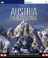

Austria
Professional
von Flightware, Österreich
getestet von Matthias Lieberecht
Der Skandal um Papa Tango ist zwischenzeitlich
sicherlich bis zum letzten Flightsimmer durchgedrungen.
Fast auf allen Freeware anbietenden Servern findet sich
ein Bericht darüber, mit dem direkten oder indirekten
Aufruf, Papa Tango zu boykottieren. Normalerweise sind
sich hier Freeware Nutzer auch einig. Nicht so bei Austria
Professional. Hier hört und liest man immer wieder, dass
zumindest was diese Scenery betrifft der Boykott
ausgesetzt wird. Ist diese Scenery wirklich so gut, dass
sich das lohnt?
 Normalerweise
wäre ich jetzt dabei, den zweiten Teil des FLY Reviews
fertig zu stellen. Als ich dann aber Austria Professional
im Briefkasten hatte, disponierte ich erst einmal um.
Leider bestand diese Testversion nur aus einer CD ohne
Dokumentation und Verpackung. Dies ist ungewöhnlich und
ich kann daher nicht sagen, wie gut oder schlecht das
Handbuch ist. Ebenso wenig, ob eventuell Anflugkarten zum
Lieferumfang gehören. Aber sei's drum - getestet wird
trotzdem.
Normalerweise
wäre ich jetzt dabei, den zweiten Teil des FLY Reviews
fertig zu stellen. Als ich dann aber Austria Professional
im Briefkasten hatte, disponierte ich erst einmal um.
Leider bestand diese Testversion nur aus einer CD ohne
Dokumentation und Verpackung. Dies ist ungewöhnlich und
ich kann daher nicht sagen, wie gut oder schlecht das
Handbuch ist. Ebenso wenig, ob eventuell Anflugkarten zum
Lieferumfang gehören. Aber sei's drum - getestet wird
trotzdem.
 Installation
und Speicherbedarf
Installation
und Speicherbedarf
Die Installation erfolgt direkt nach dem Einlegen der
CD (zumindest wenn der Autostart nicht deaktiviert wurde).
Nachdem man die Regist.-Nr. eingegeben hat, kann man
festlegen, in welches Verzeichnis Austria installiert
werden soll. Die gesamte Installationsroutine läuft dann
automatisch ab. Zusätzlich zu den Scenery Dateien werden
zwei Flugzeuge installiert. Dabei handelt es sich um die
Pilatus PC-6B Turbo Porter, wovon eine in den Farben der
Australian Army ist (nicht Austrian!). Die Flugzeuge
nehmen mit Panel (ohne Gauges) ca. 6MB in Anspruch. Die
Scenery Dateien benötigen 213MB.
Die Flugzeuge
Eigentlich handelt es sich bei den beiden PC-6
Flugzeugen um gleiche Modelle. Nicht so hier. Die
Australien Army Version steht sauber auf dem Boden und hat
einen Sound. Die "Blaue Liesl", so heißt das
zweite Modell, schwebt einige Fuß über der Landebahn und
schweigt trotz laufendem Motor. Beide Ordner sind
allerdings mit den selben Soundfiles gefüllt. Eine
Untersuchung des Airfiles brachte an den Tag, dass eben
diese 'Liesl' als Prop-Version ausgelegt ist und ein
Jet-Soundfile besitzt. Die Militärvariante hat ein
korrektes Jet-Airfile. Somit funktioniert der Sound nur
hier. Da die Flugzeuge aber eher als Beigabe zu sehen
sind, überspringe ich weitere Details und widme mich nun
der Scenery, die ich mit einer Piper Pa-28 und einem
Gulfstream erkundete.
 Die Scenery
Die Scenery
Für mich ist es ein wichtiges Merkmal, wie kompatibel
eine neue Scenery zu den europäischen Standardszenerien,
wie z.B. Europe 1 ist. Um dies zu testen, begab ich mich
zum Start meiner Route auf den Münchner Flughafen. Hier
kam die erste Überraschung. Statt des erwarteten German
Airports München, stand ich wieder auf dem lieblosen
Europe 1 Platz. Über den FSNavigator stellte ich fest,
dass Austria hier Änderungen vornimmt und verschiedene
Dateien darüber installiert. Nachdem ich GAP 1 im Layer höher
setzte stand ich endlich auf dem korrekten Flughafen, den
ich zuvor erwartete. Beim Rollen kam aber die zweite Überraschung.
Die Scenery zog extreme Schlieren. Ein Navigieren auf dem
Platz war nicht mehr möglich. Um den Fehler ausfindig zu
machen, schaltete ich alle umliegenden Szenerien ab. Erst
als ich Austria ausschaltete war das Manko beseitigt. Also
wechselte ich nach Augsburg. Hier nahm Austria zwar
ebenfalls Änderungen vor, das Zusammenspiel mit GAP 1
funktioniert aber.
 Nach Innsbruck
Nach Innsbruck
Mein erster Zielflughafen sollte nun Innsbruck werden.
Ich plante den Flug mit der Piper über Eurach und
Rattenberg ohne ILS Landung. Kurze Zeit nach dem Start sah
ich das Alpenpanorama. Dabei bauen sich die Erhebungen majestätisch
vor einem auf und man bekommt den ersten positiven
Eindruck. Die Bilder gleichen dabei fast schon Fotos. Als
ich den Ammersee passierte, stellte ich fest, dass Austria
einen grauen Ton für die Darstellung der Gewässer
verwendet. Sieht nicht unbedingt schön aus, man kann aber
damit leben. Was mich allerdings stört ist, dass ich den
VOR Eurach immer noch nicht empfange. Erst 5Nm vor der
Station bekomme ich das VOR rein. Der FSNavigator zeigt
mir eine Range von 4Nm für dieses VOR an. Gut, ein VOR
welches schon etwas von Hügeln umgeben ist empfängt man
schlechter. Aber 5Nm erscheint mir dennoch zu wenig. Bei
Rattenberg sind die Erhebungen schon reichlich und ich
muss feststellen, dass die Berge grandios getroffen sind.
Kein Vergleich zum Europe 1 Alpenpanorama.  Alle
Previews,
die ich bisher sah scheinen korrekt zu sein. Ein Pumpen
der Scenery tritt zu keinem Zeitpunkt auf und es scheint,
als ob wirklich jede Unebenheit des Bodens nachgebildet
wurde. Nach dem NDB Rattenberg beginne ich den Sinkflug.
Kurz vor dem Innsbrucker Flughafen vergleiche ich die
Scenery noch einmal mit Karten und Fotos. Es stimmt jedes
Detail. Leider musste ich in Innsbruck feststellen, dass
diese Liebe zum Detail nur der Landschaft galt. Die Flughafengebäude
sind nur an der Vorderseite texturiert. Man kann sogar
soweit gehen und sie mit dem Europe 1 Flughafen
vergleichen (hier hatten die Gebäude allerdings noch
seitliche Fenster!). Nein, so schön die umliegenden Alpen
auch sind - der Flughafen bereitet keine Freude.
Alle
Previews,
die ich bisher sah scheinen korrekt zu sein. Ein Pumpen
der Scenery tritt zu keinem Zeitpunkt auf und es scheint,
als ob wirklich jede Unebenheit des Bodens nachgebildet
wurde. Nach dem NDB Rattenberg beginne ich den Sinkflug.
Kurz vor dem Innsbrucker Flughafen vergleiche ich die
Scenery noch einmal mit Karten und Fotos. Es stimmt jedes
Detail. Leider musste ich in Innsbruck feststellen, dass
diese Liebe zum Detail nur der Landschaft galt. Die Flughafengebäude
sind nur an der Vorderseite texturiert. Man kann sogar
soweit gehen und sie mit dem Europe 1 Flughafen
vergleichen (hier hatten die Gebäude allerdings noch
seitliche Fenster!). Nein, so schön die umliegenden Alpen
auch sind - der Flughafen bereitet keine Freude.

Reutte und andere kleine Plätze
Nach Innsbruck begab ich mich auf den Weg nach Reutte.
Dabei handelt es sich um eine der vielen kleineren
Graspisten. Mit Europe 1 war es noch recht einfach sich
durch die Täler zu bewegen. Bei Austria ist mehr
erforderlich, da sich die Täler realistisch verengen und
an einem Steilhang enden können, was in der Realität
bereits oft zu tödlichen Unfällen führte. Wenn man sich
erst einmal an die schwarzen Flüsse gewöhnt hat, ist die
Scenery hervorragend für VFR Flüge geeignet. Damit
lassen sich dann solche Missgeschicke gezielt durch
Studieren von Landkarten vermeiden. Leider fand ich in
Reutte nur eine Graspiste - sonst nichts. Um nicht alle
kleinen Plätze beschreiben zu müssen fasse ich das hier
zusammen. Sie sind fast alle gleich und bestehen nur aus
der Piste oder Landebahn. Ausnahmen mit einem vorne
texturierten Klotz (manchmal auch zu einem Haus geformt)
gibt es, sind aber in der Minderheit.
 Samedan - Kompatibilität zu Italien
Samedan - Kompatibilität zu Italien
Von Reutte aus begab ich mich Richtung Inntal, das ich,
nach Vorbeiflug der Lechtaler Alpen, von Landeck aus bis
nach Samedan durchfliegen wollte. Samedan war mir deshalb
wichtig, um zu sehen, wie sich Austria mit diversen
Italien Szenerien verhält. Das Inntal zu durchfliegen war
wieder ein wahre Freude, die aber einige Meilen vor
Samedan jäh gestört wurde. Hier kamen die ersten
Alpenberge von Francesco Mandell's genialer Norditalien
Scenery durch. Sie pflanzten sich einige Fuss vor meinem
Fenster fest und zerstörten so den schönen Ausblick auf
Austria. Also wechselte ich Norditalien mit einer anderen
Italien Scenery, die ich noch installiert hatte. Leider
selbes Ergebnis. Auch mit der Demoversion von Italy98, die
mit MadDog ausgeliefert wird, sieht es gleich aus.
 Salzburg und Graz
Salzburg und Graz
Die nächsten beiden Flughäfen meiner Besucherliste
waren Salzburg und Graz. Bei beiden zeigte sich jedoch
nichts anderes als in Innsbruck. Sehr schöne Landschaft
aber nur ungenügende Flughafengebäude. Fast alle davon
wieder nur an der Vorderseite texturiert. Wenigstens weist
Salzburg aber ein paar Häuser der Stadt auf. Für einen
Rundflug lohnen sie sich aber nicht. Vegetation habe ich übrigens
bisher noch nirgendwo gesehen.


Klagenfurt - Kompatibilität mit Slowenien
 Nicht anders als bei den anderen größeren Flughäfen
sieht es in Klagenfurt aus. Dennoch steuerte ich diesen
Flughafen an, um die Kompatibilität mit Joze Kuznik's schöner
Slowenien Scenery zu testen. In Klagenfurt gab es noch
keine Probleme. Diese kamen aber, je näher ich mich in
slowenisches Gebiet vorwagte. Kurz vor Ljubljana kam dann
das Chaos. Die Austrian Scenery hörte wie ein Schnitt
durch einen Kuchen auf. Berge waren durchlöchert und
Kirchen flogen über(!) mir vorbei. Die Ladebahn des
Ljubljanaer Flughafens war vollständig verschwunden. Also
wieder nicht kompatibel zu einer weiteren Scenery. Als ich
Slowenien im Layer höher setzte als Austria funktionierte
es zwar, wenn auch das Grenzgebiet immer noch unmöglich
aussieht.
Nicht anders als bei den anderen größeren Flughäfen
sieht es in Klagenfurt aus. Dennoch steuerte ich diesen
Flughafen an, um die Kompatibilität mit Joze Kuznik's schöner
Slowenien Scenery zu testen. In Klagenfurt gab es noch
keine Probleme. Diese kamen aber, je näher ich mich in
slowenisches Gebiet vorwagte. Kurz vor Ljubljana kam dann
das Chaos. Die Austrian Scenery hörte wie ein Schnitt
durch einen Kuchen auf. Berge waren durchlöchert und
Kirchen flogen über(!) mir vorbei. Die Ladebahn des
Ljubljanaer Flughafens war vollständig verschwunden. Also
wieder nicht kompatibel zu einer weiteren Scenery. Als ich
Slowenien im Layer höher setzte als Austria funktionierte
es zwar, wenn auch das Grenzgebiet immer noch unmöglich
aussieht.

Tip zur Steigerung der Kompatibilität
Es scheint so zu sein, als müssten alle umliegenden Szenerien
im Layer höher sein als Austria. Dadurch treten zwar in
den Grenzgebieten sehr unschöne Bilder auf (aber besser
als anders herum), fliegende Kirchen, Landebahnen und
Klassenzimmer (sorry, das war ein Film) werden aber
vermieden. Ebenso sind dann wenigstens Landungen auf Flughäfen
angrenzender Szenerien möglich.
 Von Wien bis Linz und zurück nach Augsburg
Von Wien bis Linz und zurück nach Augsburg
Der Wiener Flughafen ist der einzige, der etwas
detaillierter ausgefallen ist. Hier gibt es etwas
Vegetation, Gebäude und genauer dargestellte Flughafengebäude.
Ebenso Fluggastbrücken, die aber nicht mit Stopsigns
versehen sind. Die umliegende Landschaft ist auch hier
sehr korrekt und schön dargestellt. Das gilt auch für
den Weiterflug zur Industriestadt Linz. Was bedeutet, dass
VFR Fluege bei Austria nicht nur im Gebirge, sondern auch
im Flachland möglich sind. Man hat bei den Texturen
niemals den Eindruck, als würden sie sich wie ein Teppich
wiederholen. In Linz wurde der Tower sehr schoen
nachgebildet. Wenn der Designer diesen Wert auch auf
andere Objekte gelegt hätte, gäbe es an  Austria
Professional wesentlich weniger auszusetzen. Den Rückflug
plane ich noch einmal nach München. Ich möchte hier
sicher gehen, dass es wirklich stimmt und Austria nicht
mit GAP München kompatibel ist. Leider stimmt es. Sobald München
sichtbar wird, verreibt es vor meinen Augen. Eine Landung
ist nicht möglich, somit weiche ich wieder nach Augsburg
aus.
Austria
Professional wesentlich weniger auszusetzen. Den Rückflug
plane ich noch einmal nach München. Ich möchte hier
sicher gehen, dass es wirklich stimmt und Austria nicht
mit GAP München kompatibel ist. Leider stimmt es. Sobald München
sichtbar wird, verreibt es vor meinen Augen. Eine Landung
ist nicht möglich, somit weiche ich wieder nach Augsburg
aus.

Zusammenfassung
Austria Professional ist eine sehr schön gemachte
Landschaftsszenerie, die sehr gut für VFR Fluege geeignet
ist. Meiner Meinung nach hätten die Designer aber etwas
mehr Wert auf die Gestaltung der Flughäfen legen können.
Ich glaube, eine weitere Terminverschiebung hätte man ihm
sicher verziehen. Noch bitterer ist es aber, dass Austria
nicht mit GAP München und allen anderen umliegenden
Gebieten voll kompatibel ist. Sicher, man kann nicht alle
Gebiete testen und eine eierlegende Wollmilchsau auf den
Markt bringen. Dennoch schmerzt es, da ich auch nicht zu
den Simmern gehöre, die ständig Szenerien während eines
Fluges ab- und anschalten wollen. Bei aller Schimpferei
darf man aber nicht vergessen, was für eine Arbeit und
Zeit in der vorliegenden Alpendarstellung liegt, die
sicher ihresgleichen sucht. Jeder der sich für die
Scenery interessiert sollte genau wissen, welche
Gewichtung er der Scenery, den Texturen, der Kompatibilität
und den Flughäfen gibt. Sonst kann es passieren, dass er
mit dieser doch recht guten Landschaftsdarstellung enttäuscht
wird.
Matthias Lieberecht
Lieberecht@cw-net.de
22.Oktober 1999
Gegendarstellung von Aurel Jentsch, Flightware for
Professionals, zum Austria Professional Test: hier
klicken
(wir weisen darauf hin das wir zu dieser
Gegendarstellung im Sinne des Pressegesetzes verpflichtet
sind)


{kind=link}